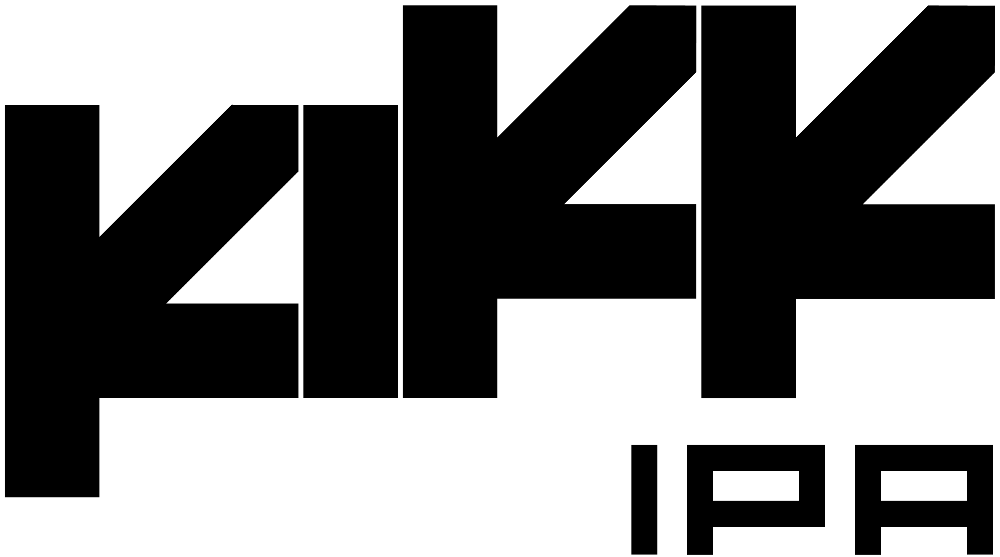

ケンイシイ(KI):
KIKK IPAの歴代ラベルデザインを担当してもらっているヤマシタさんに、お話を聞いてみようと思います。最初にこの話を僕の方からさせてもらった時、率直にどう思いましたか?
ヤマシタヤスノブ(YY):
僕は主にCDジャケットや音楽関係のデザインをやってきたんですが、お菓子や飲食物のパッケージには以前から強い関心があって「いつか自分でもパッケージデザインをやってみたい」と思っていたところにこの話をいただいたので、「ぜひやらせてください!」と即答したのを覚えています。
KI:
僕自身も、ビールを自分で作るのは初めてでした。RISE & WIN Brewing Co.さんには最初に、「ビールだけでなく、商品のアートワークまで含めてやらせてほしい」とお願いしていたんです。自分はかなりのハードドリンカーなので(笑)、これまで本当にたくさんのビールラベルを見てきました。だからこそ「自分にしかできないもの」「他とは違うもの」を、デザインとしてもやりたかった。オリジナルのアイデアを持っていて、一番信頼しているヤマシタさんと一緒にできたのは、本当に良かったです。


~KIKK IPA 歴代ラベルデザインを巡って~
ケンイシイ X ヤマシタヤスノブ(デザイナー)
イントロダクション
1. KIKK IPA 2019(ウエストコーストIPA)の誕生
KI:
最初にKIKK IPA 2019を作るとき、どんなことを感じていましたか?何か印象に残っているエピソードはありますか?
YY: 最初は、ケンさんは「ビールの広告塔」的な立ち位置なのかな、と思っていたんです。でも話を聞いてみたら、ビールそのものから一緒に作るということで、これは本気だなと。ますます気合が入りました(笑)。
確か品川の「マーちゃん※1」で打ち合わせをしていた時、その場でいくつかラフを描いたんですよね。その中で、穴が開いているだけのシンプルなラベルが「それいいね!」となり、そこからどういう形状で穴を開けるか、の話になりました。
斜め45度のラインというのは、縦書きでも横書きでも、東洋でも西洋でもない、昔から自分の中で、どこか未来的なイメージがあったので、45度の線で穴のデザインを構築できないかと考え始めました。
YY: 最初は、ケンさんは「ビールの広告塔」的な立ち位置なのかな、と思っていたんです。でも話を聞いてみたら、ビールそのものから一緒に作るということで、これは本気だなと。ますます気合が入りました(笑)。
確か品川の「マーちゃん※1」で打ち合わせをしていた時、その場でいくつかラフを描いたんですよね。その中で、穴が開いているだけのシンプルなラベルが「それいいね!」となり、そこからどういう形状で穴を開けるか、の話になりました。
斜め45度のラインというのは、縦書きでも横書きでも、東洋でも西洋でもない、昔から自分の中で、どこか未来的なイメージがあったので、45度の線で穴のデザインを構築できないかと考え始めました。

最初の手書きラフ
KI:
最終的にラベルは、黄土色のようで、でもそれとも違う絶妙な色になりましたよね。穴から覗く瓶のこげ茶との対比もすごく美しくて。いろいろなビールを見てきた中でも、あの色は見たことがなかったし、しかも一番好きなスタイルのウエストコーストIPAだったので、本当に良かったなと思っています。今でも2019年の最初のボトルは、ちょっと特別に好きです。ロゴも、穴の印象を活かしたカクカクした形で、いかにもヤマシタさんらしい。今でもあのロゴを使い続けています。
2. KIKK IPA 2020（ニューイングランドIPA）
KI: ニューイングランドIPAは、とにかくホップの量が多いんです。ホップという植物のイメージから「緑」が頭にありましたが、何か考えはありましたか？
YY: まず、2019が最初で最後のつもりだったので，また作れることになって嬉しかったです。一口に緑といっても本当にいろいろありますよね。2019の世界観を踏襲しつつ、微妙にズレた緑をいくつかピックアップして、そこから選んでもらった記憶があります。
KI: 確かに。ヤマシタさんが出してくる色って、いわゆる「一般的な色」じゃないんですよね。「ここにしかない色」になったのが、すごく良かったと思います。
YY: まず、2019が最初で最後のつもりだったので，また作れることになって嬉しかったです。一口に緑といっても本当にいろいろありますよね。2019の世界観を踏襲しつつ、微妙にズレた緑をいくつかピックアップして、そこから選んでもらった記憶があります。
KI: 確かに。ヤマシタさんが出してくる色って、いわゆる「一般的な色」じゃないんですよね。「ここにしかない色」になったのが、すごく良かったと思います。
3. KIKK IPA 2021（セッションIPA）
KI: 2021は、いわゆるセッションIPAで、少し軽めのビールでした。飲みやすさや軽さをテーマにして、「黄色がいいかな」と。これは比較的スムーズに決まりましたよね。
YY: そうですね。2019と2020を並べて見ながら、次に来る色を自然に決めていった感じでした。
YY: そうですね。2019と2020を並べて見ながら、次に来る色を自然に決めていった感じでした。
4. KIKK IPA 2022（ダブルIPA）— モデルチェンジ
KI: 最初の3部作がひと区切りして、次は少しモデルチェンジしたい、という流れで2022になります。この時のコンセプトやエピソードを教えてください。
YY: 実は、ビールとは別に、KIKK IPAのロゴをモチーフにしたTシャツ※2のデザインを考えていたんです。そのTシャツの絵柄を使って、ラベルに展開できないか、という発想が最初でした。なので、先にTシャツのデザインがありました。最終的には、そのTシャツをもとにシンプルにロゴを使った案と，まだやっていなかったポップなコラージュ案の2案を提出して、RISE & WINさんの意見も聞いてみよう、という流れになりました。

 KI: そうでしたね。これまでのカクカクしたロゴやデザインは、ファンの方にも十分浸透しただろう、という感覚があって。今回は少し丸みのある、可愛くて親しみやすい方向性もテーマだった気がします。最終的に、色数が多くて賑やかなポップな案と，Tシャツをもとにしたシンプルな案。この2つが残りましたよね。僕は本当に両方好きで、正直決められなくて（笑）、RISE & WINさんに意見を聞いた形でした。
KI: そうでしたね。これまでのカクカクしたロゴやデザインは、ファンの方にも十分浸透しただろう、という感覚があって。今回は少し丸みのある、可愛くて親しみやすい方向性もテーマだった気がします。最終的に、色数が多くて賑やかなポップな案と，Tシャツをもとにしたシンプルな案。この2つが残りましたよね。僕は本当に両方好きで、正直決められなくて（笑）、RISE & WINさんに意見を聞いた形でした。
YY: 結果的に、2022がInternational Beer Cupで銀賞（インペリアルIPA部門）を受賞して，シンプルなラベルの方を選んでくれて良かったなと思いました。
YY: 実は、ビールとは別に、KIKK IPAのロゴをモチーフにしたTシャツ※2のデザインを考えていたんです。そのTシャツの絵柄を使って、ラベルに展開できないか、という発想が最初でした。なので、先にTシャツのデザインがありました。最終的には、そのTシャツをもとにシンプルにロゴを使った案と，まだやっていなかったポップなコラージュ案の2案を提出して、RISE & WINさんの意見も聞いてみよう、という流れになりました。
コラージュ案
YY: 結果的に、2022がInternational Beer Cupで銀賞（インペリアルIPA部門）を受賞して，シンプルなラベルの方を選んでくれて良かったなと思いました。
5. KIKK IPA KI30（ベルジアンIPA） — ケンイシイ・デビュー30周年記念エディション
KI: 次の年は、僕のアーティストデビュー30周年でした。それを記念して作ったのが「KI30」です。音楽的なルーツでもあり、僕がビール好きになったきっかけでもあるベルギービールに敬意を表した、ベルジアンIPAでした。デザイン面はいかがでしたか？
YY: 確か藤井さん（ケンイシイのマネージャー）から、「なるべく一般受けするものにしてほしい」というオーダーが最初にあったと思います。そこで、自分なりの“一般受け案”と、もう一つはいつも通り自由に作った案、2つを用意しました。最終的には、自由に作った方が選ばれましたね。
KI: 思い出しました。30周年全体のロゴやビジュアルと連動させたい、というマネージャー的な視点もあって、「万人に受け入れられるもの」という話が出ていたんだと思います。
YY: 自由に考えた案は，とにかく「元気」で「力強い」イメージにしたかった。ケンさんのテクノのように、迷いなく突き進む感じ。書体は、2001年『Flatspin』の時に作ったフォントのアイソメ図（等角投影）になっています。Ken Ishiiロゴでも使っている制作法ですね。外型の形状は、『Liver Blow Remixes EPs』で使った、クセの強い八角形をさらにアレンジしたものです。もともとビールラベルとして作ったデザインが、ケンさんがDOMMUNEに出演されたとき、スタジオの壁面デザインに展開されたのも嬉しかったです。
KI: ヤマシタさんの色や形の個性が、一番濃く出たデザインだと思います。僕が好きなのは、ポップなんだけど少し歪んでいる、あの感じ。それが存分に表れているなと。
YY: 確か藤井さん（ケンイシイのマネージャー）から、「なるべく一般受けするものにしてほしい」というオーダーが最初にあったと思います。そこで、自分なりの“一般受け案”と、もう一つはいつも通り自由に作った案、2つを用意しました。最終的には、自由に作った方が選ばれましたね。
KI: 思い出しました。30周年全体のロゴやビジュアルと連動させたい、というマネージャー的な視点もあって、「万人に受け入れられるもの」という話が出ていたんだと思います。
YY: 自由に考えた案は，とにかく「元気」で「力強い」イメージにしたかった。ケンさんのテクノのように、迷いなく突き進む感じ。書体は、2001年『Flatspin』の時に作ったフォントのアイソメ図（等角投影）になっています。Ken Ishiiロゴでも使っている制作法ですね。外型の形状は、『Liver Blow Remixes EPs』で使った、クセの強い八角形をさらにアレンジしたものです。もともとビールラベルとして作ったデザインが、ケンさんがDOMMUNEに出演されたとき、スタジオの壁面デザインに展開されたのも嬉しかったです。
KI: ヤマシタさんの色や形の個性が、一番濃く出たデザインだと思います。僕が好きなのは、ポップなんだけど少し歪んでいる、あの感じ。それが存分に表れているなと。
6. KIKK IPA 2025
KI: 1年空いて、2025年。今回、僕からはどんなオーダーがあって、どう進行したのか今一度教えてもらえますか。
YY: 今回は、ケンさんに具体的なイメージがあって「ライムグリーンとブライトイエローのモノグラムでいきたい」と。それで実際にラフを作ってみると、コントラストが足りず、面白さが少し見えにくかった。そこで配色を再考しました。
黒とメタリックブラックの差で表現できないか、ロゴだけを盛り上げるバーコ印刷にできないか、なども検討したのですが、技術的な制約で難しくなり、最終的に特色2色でまとめることになりました。
KI: 形にしてもらうと、最初に自分が想定していたものとは少し違う感覚もありました。でも、ヤマシタさんが提案してくれたアイボリーが本当に絶妙で。時間的な制限の中でも、あまり見たことのないデザインになったと思います。よく見ると細部が面白くて、Rise & Winさんからもかなり好評でした。
YY: 規定文の右側、アイボリーの白抜き部分が、ちょっと印刷の擦れのように見えて、面白い効果が出ましたよね。
KI: ああいう、どこかバグっている感じって、すごくクールだと思うんです。ある意味、計算されたバグというか（笑）。
YY: 今回は、ケンさんに具体的なイメージがあって「ライムグリーンとブライトイエローのモノグラムでいきたい」と。それで実際にラフを作ってみると、コントラストが足りず、面白さが少し見えにくかった。そこで配色を再考しました。
黒とメタリックブラックの差で表現できないか、ロゴだけを盛り上げるバーコ印刷にできないか、なども検討したのですが、技術的な制約で難しくなり、最終的に特色2色でまとめることになりました。
KI: 形にしてもらうと、最初に自分が想定していたものとは少し違う感覚もありました。でも、ヤマシタさんが提案してくれたアイボリーが本当に絶妙で。時間的な制限の中でも、あまり見たことのないデザインになったと思います。よく見ると細部が面白くて、Rise & Winさんからもかなり好評でした。
YY: 規定文の右側、アイボリーの白抜き部分が、ちょっと印刷の擦れのように見えて、面白い効果が出ましたよね。
KI: ああいう、どこかバグっている感じって、すごくクールだと思うんです。ある意味、計算されたバグというか（笑）。
今後の展望
KI: という感じで，僕らは個人的に仲いいんで，普段からよく話してますし、今もビールを飲みながらなんですけど（笑）今日はデザインにまつわる思い出話をしてみました。また次も、楽しいビールが作れるといいですね。
YY: そうですね。ケンさんとのモノづくりは毎回楽しいです。KIKK IPAが缶になったら、それも面白そうですよね。
KI: うん。缶になると単純に面積が増えるし、表現の幅も広がりますよね。
YY: ぜひ、やりたいですね。
KI: やりましょう。今日はありがとうございました。
YY: ありがとうございました。
YY: そうですね。ケンさんとのモノづくりは毎回楽しいです。KIKK IPAが缶になったら、それも面白そうですよね。
KI: うん。缶になると単純に面積が増えるし、表現の幅も広がりますよね。
YY: ぜひ、やりたいですね。
KI: やりましょう。今日はありがとうございました。
YY: ありがとうございました。
※1 品川駅港南商店街にある飲食店
※2 リンクはこちら
※2 リンクはこちら